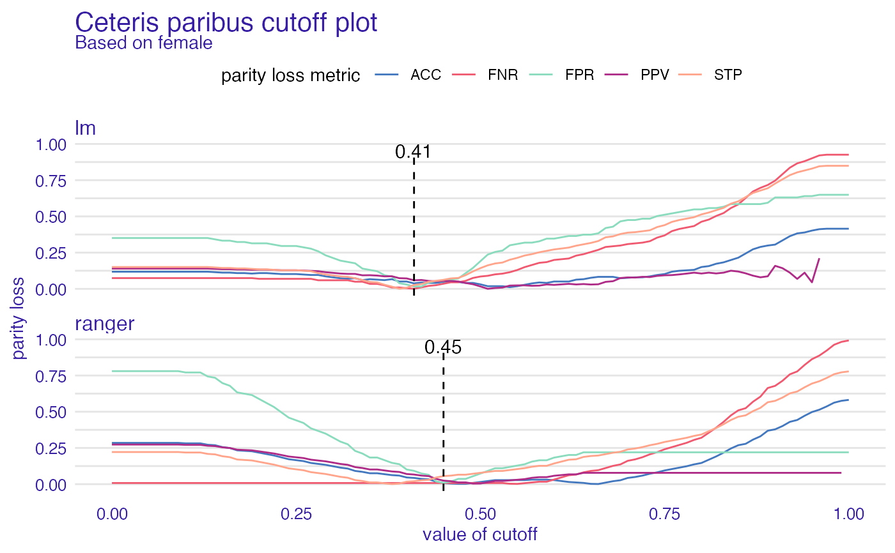

plot_ceteris_paribus_cutoff.RdCeteris paribus cutoff is way to check how will parity loss behave if we changed only cutoff in one subgroup. It plots object of class ceteric_paribus_cutoff. It might have two types - default and cumulated. Cumulated sums metrics and plots it all in one plot. When default one is used all chosen metrics will be plotted for each model.
# S3 method for ceteris_paribus_cutoff plot(x, ...)
| x | ceteris_paribus_cutoff object |
|---|---|
| ... | other plot parameters |
ggplot object
data("compas") # positive outcome - not being recidivist two_yr_recidivism <- factor(compas$Two_yr_Recidivism, levels = c(1,0)) compas$T#> [1] 0 1 1 0 1 0 0 0 1 0 0 1 1 0 0 1 1 1 1 1 0 1 0 0 1 1 1 1 1 0 1 1 1 1 0 0 0 #> [38] 1 0 1 1 1 0 0 1 0 0 1 0 0 0 0 1 1 1 1 0 1 0 0 1 0 0 1 1 0 1 0 1 0 0 1 1 1 #> [75] 1 1 0 1 1 1 1 0 1 0 0 1 0 1 1 0 0 0 0 1 1 0 1 0 1 1 1 1 0 0 1 1 0 1 0 0 0 #> [112] 0 1 0 1 1 1 1 0 1 0 0 1 1 1 1 1 1 0 0 1 1 0 1 0 1 0 1 0 0 0 1 0 1 0 0 0 0 #> [149] 1 1 0 0 1 0 0 1 1 1 0 0 1 1 1 1 0 1 0 0 1 0 0 0 1 1 1 0 0 1 0 0 1 0 0 1 0 #> [186] 1 0 1 0 0 1 0 1 0 0 0 0 1 0 0 1 0 0 0 0 1 1 0 0 1 1 0 1 0 0 0 1 1 0 0 1 1 #> [223] 0 0 0 0 0 0 1 0 0 1 1 1 0 0 0 1 0 0 0 0 1 1 1 0 0 1 1 1 0 0 0 1 0 0 1 0 0 #> [260] 0 1 1 0 1 0 1 0 0 0 1 0 1 1 1 0 0 1 0 0 1 0 0 1 0 0 0 1 0 0 0 1 0 0 0 0 0 #> [297] 1 0 1 0 0 0 1 0 0 0 0 1 1 1 0 1 1 1 0 0 0 0 1 1 0 1 0 0 0 1 0 1 0 0 0 1 0 #> [334] 1 0 0 1 1 0 0 0 0 0 0 0 1 0 0 0 1 1 1 0 1 1 1 0 1 0 1 0 0 1 0 0 1 1 0 0 0 #> [371] 1 1 1 0 0 0 0 0 1 1 1 1 1 1 1 1 1 1 0 0 0 0 1 1 1 0 1 1 0 1 0 0 0 0 1 0 1 #> [408] 1 0 0 0 1 1 1 0 0 1 0 1 0 0 1 1 0 1 0 0 0 0 0 0 0 0 0 0 0 0 1 1 0 1 0 1 1 #> [445] 0 0 0 1 0 1 1 1 0 0 0 0 1 1 1 0 1 1 1 0 0 0 0 0 0 1 1 0 1 0 0 0 1 0 0 1 0 #> [482] 0 1 0 1 0 0 0 0 0 1 1 1 0 1 0 0 1 0 0 0 0 0 1 0 0 0 1 1 0 1 0 1 0 1 0 0 1 #> [519] 0 1 1 0 1 0 1 0 0 1 0 0 1 0 1 1 0 0 1 0 1 1 0 1 1 0 0 0 1 0 0 1 1 1 1 1 1 #> [556] 0 0 1 1 1 0 0 0 0 0 0 1 0 0 0 0 1 1 0 0 1 1 1 0 1 1 0 0 1 0 1 1 1 0 0 0 0 #> [593] 0 1 1 0 1 0 0 0 0 1 1 0 0 1 0 1 0 0 1 0 0 0 0 0 1 1 1 0 1 0 0 0 0 1 0 0 0 #> [630] 1 1 0 1 0 0 0 0 1 0 1 1 1 1 0 1 0 0 0 0 1 0 0 1 0 1 0 0 1 0 0 0 0 1 1 1 0 #> [667] 0 0 0 0 1 0 1 1 0 0 0 0 1 0 0 0 1 0 0 0 1 1 0 0 0 1 0 1 1 0 1 1 0 0 1 0 0 #> [704] 1 0 1 0 1 1 1 1 1 1 0 0 1 0 1 0 0 1 1 1 0 1 1 1 0 1 0 0 0 0 1 0 1 0 1 1 0 #> [741] 1 0 0 0 0 0 0 1 0 1 1 0 0 0 1 0 1 0 1 0 0 1 1 1 0 0 1 1 1 1 0 1 0 0 0 0 0 #> [778] 1 1 1 0 0 1 1 1 1 1 0 0 0 1 0 0 0 0 0 1 1 0 1 0 0 0 1 1 0 0 1 1 1 0 0 0 1 #> [815] 0 1 0 1 1 0 1 1 1 1 1 0 1 0 0 0 1 1 0 1 0 1 0 1 0 1 0 0 0 1 0 1 0 0 0 0 1 #> [852] 0 0 0 1 0 0 0 1 1 0 1 0 0 1 0 0 1 0 0 1 1 1 0 0 1 1 0 0 0 0 0 1 1 0 0 1 1 #> [889] 0 0 1 0 1 0 0 1 1 0 0 0 0 0 0 0 1 1 1 0 0 1 1 0 0 1 0 0 0 0 1 0 0 1 0 0 1 #> [926] 0 0 0 1 0 1 0 1 1 0 0 0 0 0 1 1 1 0 0 0 0 0 1 1 1 0 1 0 0 1 1 1 1 0 1 0 0 #> [963] 0 0 0 1 1 0 1 0 0 0 0 1 0 0 1 1 0 1 0 0 0 0 0 1 1 0 0 0 1 1 0 0 0 1 1 1 0 #> [1000] 0 1 1 0 0 0 1 0 0 1 0 0 0 1 1 0 0 1 1 1 1 0 0 0 1 1 1 1 0 0 0 0 0 0 1 0 0 #> [1037] 1 0 1 0 0 0 0 1 0 1 1 1 0 1 0 0 0 1 1 0 1 0 0 1 0 1 1 1 0 0 1 0 1 0 0 0 1 #> [1074] 0 0 1 0 0 0 0 0 1 1 0 1 0 1 1 0 0 0 0 0 0 0 1 0 0 0 1 1 1 1 0 0 1 1 0 0 0 #> [1111] 0 0 1 1 0 0 1 0 0 0 0 0 0 1 1 0 0 0 0 0 1 1 0 1 0 0 1 0 0 0 0 1 0 0 1 0 1 #> [1148] 0 1 1 0 0 0 0 0 1 0 0 0 1 1 0 1 0 0 0 0 1 0 0 0 1 0 1 0 1 0 1 1 0 1 0 1 1 #> [1185] 0 1 1 1 1 0 1 0 1 1 0 0 0 0 1 1 0 0 0 0 1 1 0 1 1 1 0 1 1 1 1 0 1 0 0 0 0 #> [1222] 0 1 1 1 1 1 0 0 0 1 1 0 0 0 1 1 1 1 0 0 1 0 0 1 0 0 1 0 1 0 0 1 0 0 1 0 0 #> [1259] 1 0 1 1 0 1 1 0 0 0 1 1 1 0 0 0 0 1 1 1 0 0 0 1 0 1 0 1 1 1 1 0 1 0 1 0 1 #> [1296] 0 1 1 1 0 0 0 1 0 1 0 0 1 1 1 1 0 0 0 0 0 0 0 1 1 1 0 1 1 1 0 0 1 1 0 1 0 #> [1333] 0 1 0 0 1 0 0 1 0 0 0 0 0 0 1 0 1 1 0 1 0 0 0 0 1 0 0 1 1 1 0 1 0 0 0 0 1 #> [1370] 0 0 0 1 0 1 1 0 1 0 0 0 0 0 1 1 0 1 1 1 0 0 0 1 0 0 1 1 0 1 0 1 1 1 0 0 1 #> [1407] 0 0 0 0 0 1 1 0 1 1 0 0 0 0 0 0 1 0 1 0 0 0 1 1 0 1 0 0 1 0 1 1 1 0 1 1 1 #> [1444] 0 0 0 0 0 0 0 1 1 0 0 0 0 1 0 0 1 0 0 0 0 0 0 0 1 0 1 1 0 1 0 0 1 1 1 0 0 #> [1481] 0 0 0 1 0 0 0 0 0 0 0 1 0 0 1 1 0 1 0 0 0 0 0 0 0 0 0 1 0 1 0 1 0 1 0 0 1 #> [1518] 0 1 0 0 1 1 1 0 1 0 1 1 0 0 1 1 1 0 0 1 0 0 0 0 0 1 0 0 0 0 1 0 0 1 1 0 0 #> [1555] 1 1 1 0 0 0 1 0 1 0 0 0 0 1 1 0 0 1 1 0 1 0 1 0 0 1 1 1 0 0 1 0 0 1 0 1 1 #> [1592] 1 1 0 0 1 1 0 0 1 0 1 1 1 1 0 0 1 1 1 1 1 0 0 1 1 1 0 1 0 0 1 0 0 1 0 1 0 #> [1629] 0 0 0 1 0 0 0 0 1 1 0 0 1 0 0 1 1 0 0 1 0 0 0 0 0 0 0 0 0 0 1 0 0 1 0 1 1 #> [1666] 0 0 1 0 0 1 0 0 1 0 0 1 0 1 0 1 0 0 1 0 0 1 1 1 0 1 0 1 0 1 1 1 0 0 0 0 0 #> [1703] 0 1 0 1 0 0 0 0 0 0 1 0 0 0 1 0 0 0 0 0 0 0 1 1 0 0 0 1 0 0 0 0 1 0 1 1 1 #> [1740] 1 0 1 0 0 1 1 1 0 0 1 0 1 1 0 0 0 1 0 0 0 0 1 0 1 0 1 1 1 1 0 1 1 1 0 1 1 #> [1777] 0 1 0 0 0 0 0 0 1 0 0 0 0 0 0 1 1 0 0 0 1 1 0 1 0 0 0 1 0 0 0 0 0 1 0 0 1 #> [1814] 1 0 0 0 1 1 1 1 0 1 1 1 0 1 1 1 1 0 0 1 0 0 1 0 0 1 0 1 0 0 1 0 0 0 0 1 0 #> [1851] 0 0 1 1 0 0 1 1 0 1 1 1 0 0 1 0 1 1 0 1 1 0 1 1 0 0 1 1 1 1 1 1 0 1 0 0 1 #> [1888] 1 0 1 1 0 1 0 1 1 1 0 1 0 1 1 0 1 0 1 0 0 0 0 1 1 0 1 1 0 1 0 1 1 0 1 0 1 #> [1925] 0 1 0 1 1 0 1 0 1 1 0 0 0 0 1 1 0 1 0 1 0 1 0 1 0 1 1 0 0 0 0 0 1 1 0 1 1 #> [1962] 0 0 0 0 1 0 1 1 1 0 0 0 0 1 0 1 0 0 0 1 1 1 0 0 1 1 0 0 0 0 1 1 0 1 1 0 1 #> [1999] 0 0 1 0 1 0 0 1 0 1 0 0 1 1 1 0 0 1 1 0 1 0 0 1 0 0 1 1 0 0 0 0 0 0 1 1 0 #> [2036] 1 0 1 1 1 0 0 0 0 0 0 1 0 0 0 0 0 0 0 1 0 0 1 0 1 1 1 1 0 0 0 0 0 1 1 0 0 #> [2073] 0 0 1 1 1 0 0 1 0 1 1 0 0 0 1 0 0 0 0 0 0 0 0 1 0 1 1 1 1 0 0 1 1 1 1 0 0 #> [2110] 1 1 0 0 0 1 0 0 1 0 0 1 0 0 0 1 1 0 0 1 0 1 0 1 1 1 1 1 0 1 1 0 0 0 1 0 1 #> [2147] 0 0 0 1 0 0 0 1 1 1 0 1 0 0 1 1 0 0 0 0 0 0 0 1 0 0 1 1 0 1 1 0 1 1 1 1 0 #> [2184] 0 1 0 1 1 0 0 1 1 0 0 1 1 0 1 0 0 1 0 1 0 1 1 1 0 0 1 0 0 0 0 0 0 1 1 0 1 #> [2221] 0 0 1 0 0 1 1 0 1 1 1 1 0 1 0 1 1 1 0 1 1 0 0 0 0 0 0 0 0 1 1 0 1 0 0 1 0 #> [2258] 1 0 0 0 0 1 1 0 0 1 1 1 0 0 1 0 0 0 1 0 1 1 0 1 0 0 0 0 0 1 0 0 1 0 0 1 0 #> [2295] 0 1 1 1 1 1 1 0 0 0 1 0 0 0 0 1 1 1 0 1 1 0 1 1 0 0 0 0 1 1 1 1 1 0 0 0 0 #> [2332] 1 0 0 1 1 0 0 1 0 1 1 1 1 0 1 0 1 0 1 0 0 1 1 0 1 0 1 1 1 1 1 1 1 0 1 0 1 #> [2369] 1 0 1 0 0 0 0 0 0 1 0 0 1 0 1 1 0 1 1 0 0 0 1 0 0 0 1 0 1 0 0 0 1 0 1 1 1 #> [2406] 1 1 0 0 0 0 1 0 1 0 1 1 1 0 0 0 0 1 1 1 1 1 1 1 0 1 0 0 1 1 1 0 0 1 0 1 1 #> [2443] 0 1 1 1 1 1 0 0 0 0 1 1 0 0 0 0 0 1 0 0 0 1 0 0 0 1 0 0 0 1 1 0 0 1 0 1 0 #> [2480] 0 0 0 0 0 0 0 1 0 0 0 1 1 1 0 1 0 1 0 0 0 1 0 1 0 0 1 1 1 1 1 1 0 0 0 0 0 #> [2517] 1 1 0 0 1 0 0 1 1 0 1 0 1 1 0 0 1 1 0 0 1 0 0 0 0 1 1 1 0 0 0 0 0 1 0 0 1 #> [2554] 1 1 1 0 0 1 1 1 0 1 0 1 1 0 1 0 0 1 1 0 1 0 1 0 1 1 0 0 1 1 0 1 1 1 1 1 1 #> [2591] 1 0 1 0 0 0 0 0 1 1 0 0 0 0 0 1 0 1 0 0 1 1 1 0 0 0 0 1 0 0 1 0 0 0 0 0 0 #> [2628] 0 1 1 1 1 1 1 0 1 0 0 1 0 1 0 1 1 0 0 0 1 0 0 0 0 0 1 1 0 0 1 0 0 0 0 0 1 #> [2665] 1 1 0 1 0 0 1 0 1 1 0 0 1 0 1 1 1 0 0 0 1 1 1 1 0 0 0 0 0 0 0 0 1 0 1 0 1 #> [2702] 1 1 1 0 1 1 0 0 1 0 1 0 1 1 1 0 0 0 1 1 0 1 0 0 1 0 0 1 1 0 0 0 1 0 0 1 0 #> [2739] 0 1 1 0 0 0 1 0 1 1 0 1 1 1 1 0 0 0 0 1 1 1 0 1 1 1 1 1 0 1 0 0 1 1 1 0 1 #> [2776] 0 0 1 1 1 1 0 1 0 0 1 1 1 1 1 0 1 0 1 1 1 1 0 0 1 1 0 0 0 1 1 0 0 0 1 0 0 #> [2813] 0 0 1 0 0 1 1 1 1 1 1 1 0 1 0 1 1 0 0 1 0 0 1 0 1 1 0 1 0 1 1 1 1 1 0 0 1 #> [2850] 1 0 0 0 0 1 0 1 1 1 1 1 1 0 0 1 1 1 0 0 1 1 1 1 0 0 0 1 0 1 1 0 0 1 0 0 1 #> [2887] 0 1 0 0 0 0 0 0 0 1 0 1 1 1 0 0 1 1 0 0 1 0 0 1 1 0 1 1 1 1 1 1 1 1 0 0 1 #> [2924] 0 0 0 1 0 0 1 0 1 1 0 1 0 0 1 0 1 1 1 1 0 1 0 1 0 0 0 1 1 0 1 0 0 1 1 0 0 #> [2961] 1 1 1 0 1 1 1 1 0 0 0 0 0 1 1 1 0 0 0 0 1 1 1 0 1 1 1 0 0 0 0 1 1 0 1 0 0 #> [2998] 1 0 1 0 0 1 0 1 1 0 1 0 0 0 1 0 0 0 1 1 0 0 0 1 0 0 0 1 0 1 0 1 1 1 1 1 1 #> [3035] 0 1 1 1 0 0 1 0 1 0 0 0 1 1 0 1 1 0 0 1 1 1 0 0 0 1 0 0 1 0 0 1 1 0 1 0 0 #> [3072] 0 0 1 1 0 1 0 0 0 0 0 0 0 0 0 0 0 1 0 1 1 0 1 1 1 0 1 0 1 0 1 0 1 0 0 1 1 #> [3109] 0 0 0 1 1 0 0 0 1 1 1 0 1 0 1 0 1 1 1 1 0 0 0 1 0 1 0 0 0 1 1 1 1 0 0 1 1 #> [3146] 0 0 1 0 0 0 0 0 1 1 1 0 0 1 0 0 1 1 0 0 0 0 0 1 0 1 1 0 1 1 0 1 1 1 1 0 0 #> [3183] 0 1 0 1 1 0 0 0 0 1 1 0 1 1 0 1 0 0 0 1 1 0 0 1 1 1 0 1 0 0 1 0 0 0 0 1 0 #> [3220] 0 1 0 0 0 0 0 1 0 0 0 0 1 0 0 0 1 1 1 0 0 0 1 1 0 0 1 1 1 1 0 1 1 0 1 1 1 #> [3257] 1 0 1 0 0 1 0 1 1 0 0 0 1 0 1 1 0 0 1 1 0 1 0 1 0 0 1 1 1 0 0 0 1 1 0 1 0 #> [3294] 0 1 1 1 0 1 1 1 0 1 0 0 0 1 1 1 0 0 0 1 1 1 1 0 0 0 1 1 0 1 1 1 1 0 1 0 0 #> [3331] 0 0 0 0 1 1 0 1 0 1 1 0 0 1 0 0 1 0 1 1 0 0 1 0 0 0 0 1 0 1 0 1 1 0 0 0 0 #> [3368] 0 0 1 1 1 0 1 0 0 1 0 0 1 0 1 0 1 0 0 0 0 1 1 1 0 0 0 0 1 1 0 0 0 1 0 1 0 #> [3405] 0 0 1 1 1 1 1 1 0 0 0 0 1 0 0 0 1 1 0 1 1 0 0 0 0 0 1 0 0 1 0 1 0 1 0 0 0 #> [3442] 0 0 0 1 0 0 0 1 1 1 1 0 1 0 0 0 1 0 0 1 0 0 0 0 1 1 0 0 0 1 0 1 0 1 0 1 0 #> [3479] 0 1 0 1 0 0 1 0 1 0 0 0 0 0 0 0 0 1 1 0 1 1 0 1 0 1 0 1 0 0 1 0 0 0 1 0 1 #> [3516] 1 0 1 0 0 1 0 0 0 1 0 0 1 1 1 1 1 1 1 1 1 0 1 0 0 1 0 1 0 1 1 0 0 1 0 0 1 #> [3553] 1 1 0 0 1 1 1 1 1 1 1 1 0 1 0 0 1 0 1 1 1 0 1 1 1 1 0 0 0 0 1 0 0 1 0 0 1 #> [3590] 0 0 0 1 1 0 1 0 1 0 1 0 1 0 1 0 1 1 0 1 1 0 1 1 0 0 0 0 1 1 1 1 1 1 1 0 1 #> [3627] 0 0 0 0 0 1 1 1 0 0 0 1 0 0 1 1 0 0 1 0 0 0 1 1 0 1 0 0 1 1 1 0 0 1 0 1 0 #> [3664] 0 1 1 1 1 0 1 0 1 0 1 0 1 0 1 0 1 1 0 0 0 0 1 1 1 0 1 0 0 0 0 0 1 1 1 0 1 #> [3701] 0 0 1 0 0 0 0 1 1 1 0 1 1 1 0 0 1 0 1 0 0 1 1 1 0 0 1 0 1 1 0 1 0 0 0 0 0 #> [3738] 1 1 1 1 1 1 1 0 1 1 0 0 1 0 0 0 0 0 1 0 0 0 0 0 1 0 0 0 0 1 0 0 0 0 0 1 0 #> [3775] 0 1 1 1 0 1 1 0 0 1 0 1 1 1 1 0 0 1 0 0 0 0 1 0 0 0 0 0 1 0 0 0 0 0 1 1 0 #> [3812] 0 0 0 1 1 1 0 0 1 1 0 0 0 0 1 1 0 0 1 1 0 1 0 1 1 1 1 0 1 1 1 1 0 0 1 0 0 #> [3849] 1 0 0 0 0 1 0 1 0 0 1 1 0 1 1 0 0 1 0 1 0 0 0 1 1 1 1 0 1 0 0 0 1 1 1 0 0 #> [3886] 1 0 1 0 0 1 1 0 1 1 0 1 0 0 1 1 0 0 1 0 0 0 1 1 1 0 1 0 1 1 1 0 0 1 1 1 0 #> [3923] 1 0 1 0 1 1 0 0 0 1 1 0 0 1 0 1 1 1 0 0 0 1 1 1 1 0 1 0 0 0 1 0 0 0 0 1 1 #> [3960] 1 1 1 1 0 0 0 0 0 0 0 1 0 1 0 1 1 1 0 1 1 1 0 0 0 1 0 1 0 0 0 1 1 1 0 0 0 #> [3997] 0 0 1 0 0 1 0 0 0 0 1 0 1 1 1 0 0 0 0 0 0 0 1 0 1 0 0 1 1 1 0 0 0 1 0 0 0 #> [4034] 0 1 1 0 1 1 1 0 1 0 1 1 1 0 1 0 0 0 0 1 0 0 1 1 0 1 0 1 1 1 1 1 0 1 0 0 0 #> [4071] 0 0 0 0 1 1 0 0 0 1 0 1 1 0 0 1 0 0 1 1 1 0 1 1 0 0 1 1 0 1 1 0 1 1 0 0 0 #> [4108] 1 1 1 1 1 0 1 1 1 1 1 0 1 1 0 0 0 0 0 1 0 0 1 0 1 0 1 1 1 0 1 1 1 1 0 0 1 #> [4145] 0 1 1 0 0 0 1 1 1 0 0 1 1 0 0 0 1 0 0 1 0 0 0 0 1 0 0 1 1 0 0 1 0 0 1 0 0 #> [4182] 0 1 1 1 0 1 1 1 1 1 0 0 0 1 1 0 0 0 1 0 1 1 1 0 1 0 1 0 0 1 0 0 1 0 0 0 1 #> [4219] 1 0 1 1 0 0 1 1 0 1 0 1 1 0 1 1 0 1 1 0 0 0 0 1 0 0 0 0 1 0 0 0 0 0 1 1 1 #> [4256] 0 0 1 0 0 1 1 1 1 0 0 0 1 0 0 1 1 0 1 1 0 0 0 0 1 1 1 0 0 0 0 1 0 1 0 1 0 #> [4293] 0 1 1 0 1 1 0 0 0 0 1 0 0 0 0 1 0 0 1 1 0 1 1 0 1 0 0 0 1 1 0 1 0 0 1 1 1 #> [4330] 1 0 0 0 1 1 0 0 1 1 1 1 1 0 0 0 1 0 1 1 1 0 0 0 0 0 1 1 1 0 1 0 1 1 0 1 1 #> [4367] 1 1 0 1 0 0 1 1 0 1 1 1 0 1 1 1 0 1 0 1 1 1 0 1 1 1 0 1 0 1 0 0 1 1 0 1 1 #> [4404] 1 1 0 1 0 1 0 0 1 0 0 1 0 1 1 1 1 0 0 0 1 0 1 1 0 1 1 0 1 0 0 1 1 0 0 0 0 #> [4441] 0 1 1 0 0 1 0 0 0 0 1 0 0 1 0 1 0 0 0 1 1 0 0 0 0 0 0 0 1 0 1 0 0 0 1 1 0 #> [4478] 1 0 0 1 1 0 1 0 0 0 1 1 1 1 1 1 0 0 1 0 0 1 0 1 1 1 0 0 1 0 1 1 1 1 1 1 0 #> [4515] 1 0 0 0 0 1 0 1 1 0 0 0 0 1 0 0 0 0 0 1 0 1 1 0 1 0 1 1 1 1 1 0 0 1 1 0 0 #> [4552] 1 0 1 1 0 0 1 0 1 0 1 0 0 0 0 1 0 0 1 1 1 1 0 1 0 1 0 1 0 1 0 0 0 0 0 0 0 #> [4589] 0 0 1 0 1 0 0 1 1 0 1 0 1 1 1 1 0 0 1 0 1 0 1 1 1 0 1 1 0 0 0 1 0 0 0 0 1 #> [4626] 1 0 0 0 1 0 0 1 1 0 0 0 0 0 0 1 1 0 0 0 1 0 1 0 1 1 1 0 0 1 0 1 0 0 1 1 1 #> [4663] 1 1 0 1 1 0 0 0 0 0 1 0 1 0 0 0 1 0 1 1 0 1 1 1 1 1 1 0 0 0 1 1 1 0 1 1 0 #> [4700] 1 1 0 1 0 0 1 0 0 1 0 1 0 1 1 0 0 1 1 1 1 1 1 1 0 1 1 0 1 0 0 0 0 0 1 0 1 #> [4737] 1 0 1 1 1 0 1 0 1 0 0 1 1 0 1 0 0 0 1 0 0 0 1 0 1 1 1 1 0 0 0 1 0 1 1 0 0 #> [4774] 1 0 1 1 1 0 1 1 0 0 0 0 1 1 1 1 0 0 0 1 0 0 0 0 1 1 0 1 1 0 0 1 1 1 0 1 1 #> [4811] 1 0 0 0 1 0 1 0 1 0 0 0 1 1 1 0 0 0 1 0 0 0 1 1 0 0 0 0 0 0 1 0 1 0 0 1 1 #> [4848] 0 0 1 1 0 0 0 0 0 0 0 1 0 0 1 1 0 0 1 1 1 1 0 0 0 0 0 0 0 0 1 0 0 0 0 0 0 #> [4885] 0 0 1 1 1 0 1 1 0 0 1 0 0 1 0 1 0 0 0 1 0 0 0 1 1 1 0 0 1 1 1 0 0 1 1 0 1 #> [4922] 0 1 1 0 0 1 0 0 0 1 0 0 1 0 0 1 0 0 1 0 0 0 1 0 0 0 1 1 0 0 0 0 0 1 0 0 0 #> [4959] 0 1 1 1 0 0 1 0 1 0 0 1 0 1 1 0 1 1 0 1 0 0 0 1 0 1 0 0 0 0 0 1 1 0 0 0 1 #> [4996] 1 0 1 1 0 0 0 0 1 0 0 1 0 0 1 1 1 1 1 0 1 0 1 1 1 0 0 0 0 1 1 0 0 0 0 0 1 #> [5033] 1 1 0 1 0 1 1 0 1 0 0 0 0 0 1 1 0 0 0 1 1 0 0 0 0 0 0 1 0 1 1 0 0 0 1 0 0 #> [5070] 1 0 0 0 0 0 1 1 0 0 0 0 1 1 1 1 0 1 0 1 0 1 0 0 1 0 1 1 0 0 1 1 0 1 1 0 1 #> [5107] 0 1 1 1 1 1 1 0 1 0 1 0 0 0 0 0 0 0 1 1 0 1 0 1 1 1 1 1 1 0 1 0 0 0 1 0 1 #> [5144] 0 0 1 1 1 1 0 1 1 0 1 0 1 0 1 0 1 1 1 0 1 1 1 0 0 0 0 0 0 1 0 1 1 0 0 0 0 #> [5181] 1 0 0 1 1 0 0 0 1 0 0 1 0 0 0 0 1 1 0 0 1 0 1 0 0 0 0 1 0 0 1 0 0 0 0 0 0 #> [5218] 1 0 0 1 0 1 0 1 0 0 1 0 1 1 1 0 1 0 1 1 1 1 1 1 0 0 1 0 0 1 1 0 1 0 0 0 0 #> [5255] 0 1 0 0 1 0 1 0 0 1 0 1 0 0 1 0 0 1 1 0 0 0 1 0 1 1 1 0 1 1 1 0 0 1 1 0 0 #> [5292] 1 0 0 0 1 0 0 1 0 1 0 1 1 1 0 0 0 1 1 1 0 0 0 1 0 0 1 0 0 0 1 0 1 1 0 0 0 #> [5329] 0 1 0 1 0 1 1 0 0 0 0 0 0 1 1 0 0 1 0 1 1 1 1 0 1 1 1 0 0 0 1 1 0 0 0 0 1 #> [5366] 1 0 1 0 1 0 1 0 0 0 0 0 1 1 0 0 1 0 0 0 1 1 1 1 1 0 1 1 1 1 0 1 0 0 1 1 1 #> [5403] 0 0 0 0 0 0 0 1 1 0 0 0 1 0 0 0 1 1 1 0 0 0 0 1 0 1 0 0 0 0 1 0 0 1 1 0 0 #> [5440] 0 0 0 0 1 0 1 0 0 1 1 0 1 1 0 1 0 1 0 0 0 1 0 0 1 1 0 0 1 1 0 1 0 1 1 0 1 #> [5477] 0 1 1 1 1 0 0 0 1 1 1 0 1 0 0 0 1 1 0 1 0 1 1 0 0 1 1 0 1 0 1 1 1 0 1 0 0 #> [5514] 0 0 1 1 0 0 0 0 0 0 1 0 1 1 1 1 1 0 0 1 0 0 1 1 0 0 0 1 1 1 0 1 0 0 0 0 0 #> [5551] 1 1 1 1 1 1 1 1 0 1 0 0 0 1 0 0 1 1 0 1 1 1 0 1 0 1 1 0 0 0 1 0 1 0 0 0 0 #> [5588] 1 1 1 1 0 0 1 1 0 1 1 1 0 0 1 0 1 0 0 1 0 1 1 1 1 1 0 1 0 0 1 1 0 1 0 1 1 #> [5625] 1 1 0 1 1 1 0 1 0 0 0 0 0 0 1 0 0 0 0 0 0 1 0 1 0 1 1 0 1 1 0 0 0 1 0 1 0 #> [5662] 1 0 1 1 1 1 1 0 1 0 0 1 0 1 1 0 1 0 1 1 1 1 0 0 0 1 1 0 1 1 1 0 0 0 0 0 0 #> [5699] 1 1 0 1 0 0 1 0 1 1 1 0 0 0 0 0 1 1 1 0 0 0 0 1 0 0 0 1 0 1 0 1 0 1 0 0 1 #> [5736] 0 0 0 0 0 0 1 0 0 0 0 0 1 0 0 1 1 0 1 0 1 0 1 0 0 0 1 0 0 1 0 1 1 1 0 1 1 #> [5773] 0 1 0 0 1 1 1 0 0 0 0 0 1 0 1 0 1 0 0 0 1 0 1 1 0 0 1 0 0 0 0 1 1 1 0 0 1 #> [5810] 1 0 0 1 1 0 1 1 0 1 0 1 1 0 0 0 0 0 0 0 1 0 0 0 0 0 0 0 1 1 1 0 0 0 1 1 0 #> [5847] 0 0 1 0 0 0 0 1 0 0 1 0 1 1 0 1 0 1 1 0 0 1 0 0 1 0 0 1 1 0 0 0 1 0 0 0 1 #> [5884] 1 0 1 0 0 1 0 0 0 1 1 0 0 1 1 1 0 1 1 0 0 1 1 1 1 0 1 1 1 0 0 0 1 0 0 0 1 #> [5921] 1 1 0 0 1 0 1 0 0 0 0 0 1 1 0 1 1 0 1 1 0 1 1 1 1 0 0 0 1 0 1 1 1 1 1 1 1 #> [5958] 0 1 0 0 0 1 1 0 0 1 0 0 1 1 0 0 1 0 0 0 0 1 1 1 1 1 1 0 1 0 1 0 0 1 1 1 0 #> [5995] 0 0 0 1 0 1 1 1 1 1 0 0 1 0 0 1 0 0 0 1 0 1 1 1 0 1 0 0 1 0 0 0 1 0 0 1 0 #> [6032] 1 1 0 0 0 1 1 0 0 1 1 0 0 0 0 0 0 0 1 1 1 1 1 0 1 1 0 0 1 1 1 1 1 1 1 0 1 #> [6069] 0 1 0 1 1 1 0 1 1 1 0 1 0 0 0 1 1 0 1 1 0 1 0 1 0 1 0 0 0 1 0 1 1 1 0 0 0 #> [6106] 1 0 1 1 0 1 0 1 1 0 1 0 0 0 0 1 0 0 1 0 0 0 1 1 0 0 1 0 1 0 1 1 0 0 0 0 1 #> [6143] 0 1 1 0 0 1 0 1 1 0 0 1 1 0 0 0 0 1 1 0 0 0 1 1 0 0 0 0 0 1 #> Levels: 0 1y_numeric <- as.numeric(two_yr_recidivism) -1 lm_model <- glm(Two_yr_Recidivism~., data=compas, family=binomial(link="logit")) rf_model <- ranger::ranger(Two_yr_Recidivism ~., data = compas, probability = TRUE, num.trees = 200) explainer_lm <- DALEX::explain(lm_model, data = compas[,-1], y = y_numeric)#> Preparation of a new explainer is initiated #> -> model label : lm ( default ) #> -> data : 6172 rows 6 cols #> -> target variable : 6172 values #> -> model_info : package stats , ver. 4.0.2 , task classification ( default ) #> -> predict function : yhat.glm will be used ( default ) #> -> predicted values : numerical, min = 0.1144574 , mean = 0.4551199 , max = 0.995477 #> -> residual function : difference between y and yhat ( default ) #> -> residuals : numerical, min = -0.995477 , mean = 0.08976021 , max = 0.8855426 #> A new explainer has been created!#> Preparation of a new explainer is initiated #> -> model label : ranger ( default ) #> -> data : 6172 rows 6 cols #> -> target variable : 6172 values #> -> model_info : package ranger , ver. 0.12.1 , task classification ( default ) #> -> predict function : yhat.ranger will be used ( default ) #> -> predicted values : numerical, min = 0.1368811 , mean = 0.4547992 , max = 0.8449259 #> -> residual function : difference between y and yhat ( default ) #> -> residuals : numerical, min = -0.8449259 , mean = 0.09008094 , max = 0.8631189 #> A new explainer has been created!fobject <- fairness_check(explainer_lm, explainer_rf, protected = compas$Ethnicity, privileged = "Caucasian")#> Creating fairness object #> -> Privileged subgroup : character ( Ok ) #> -> Protected varaible : factor ( Ok ) #> -> Fairness objects : compatible #> -> Checking explainers : compatible #> -> Metric calculation : successful ( NA created ) #> Fairness object created succesfully#> Warning: Removed 166 row(s) containing missing values (geom_path).